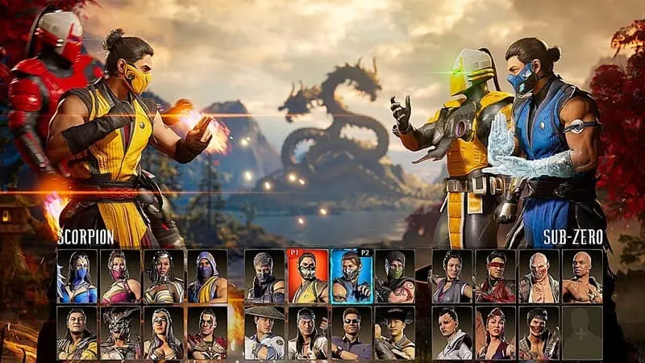

Quick Info
Genre: Fighting
Developer: Midway Games (classic), NetherRealm Studios (current)
Designers: Ed Boon, John Tobias
Game Modes: Single-player, Local multiplayer, Online multiplayer
Units Sold: 80M+ (entire franchise)
Platforms: Arcade, PC, Consoles
Release Date: October 8, 1992

Mortal Kombat (commonly abbreviated MK) is a one-on-one fighting video game franchise created by Ed Boon and John Tobias in 1992. The first four installments were distributed by Midway Games and released mainly on arcade machines; later they became available on home consoles.
Main Features
- One-on-one fighting
- Special moves and combos
- Energy system
- Character customization
- Story mode
History and Lore
Mortal Kombat was born in 1992 as a fighting game created by Midway Games, standing out for its violent style, iconic Fatalities, and unique characters.
The story revolves around tournaments between realms such as Earthrealm and Outworld, where warriors like Liu Kang, Raiden, and Scorpion battle against villains like Shang Tsung and Shao Kahn.
Over the years, the saga has expanded its lore with elder gods, conflicts between realities, and a cycle of reincarnations, making it one of the most influential and long-lasting franchises in the fighting genre.
Gameplay
Mortal Kombat is a one-on-one fighting game where players choose a character with unique abilities. Each fighter has combos, special attacks, and signature moves. The fight takes place in rounds, with the goal of reducing the opponent’s health bar using strikes, blocks, and strategies. The saga is known for its graphic violence and for introducing "Fatalities," spectacular finishing moves at the end of matches. Over time, gameplay has expanded with new modes such as cinematic story, challenge towers, online fights, and character customization.
Multiplayer
Multiplayer is an essential part of Mortal Kombat. Players can face each other both locally on the same console and online against rivals from around the world. Online matches include casual fights, ranked matches, and tournaments, testing skills in a competitive system. There are also "Towers of Time" and special events that offer rewards for completing challenges with other players. In local mode, it’s possible to play with friends in direct duels or team modes, preserving the classic experience of the saga’s first titles.
Customization
Mortal Kombat allows players to customize fighters with alternate outfits, skins, and unlockable accessories. Additionally, players can adjust control settings, combos, and stages to tailor the experience to their playstyle.
Game Images
